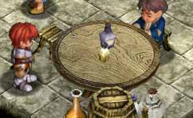
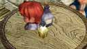
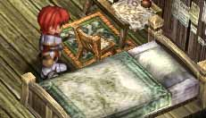
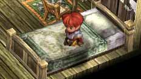
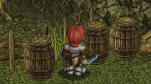
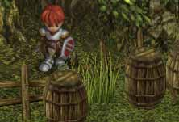
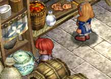
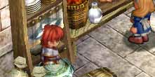
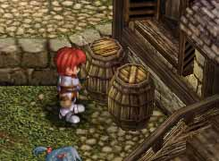
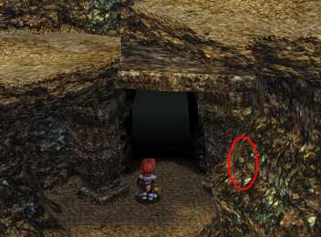

| 概要 | 情報 | ボス戦 |
| 穴場 | か･タマリ場 | 正統･穴場 |
| アイテム一覧 | 攻略チャート | 地図 |
| 敵キャラ一覧 | 変な写真 | Ys VI 攻略へ |
|
 
酒場の左の位置からジャンプし、着地点を微調整すると、机の上に着地します。そして、右のようにめり
こみます。 |
|
 
ラーバの家にあるベットの前でジャンプします。ただし、左のように椅子の背もたれ側からジャンプしなけれ
ばなりません。何度もジャンプしていると、右のようにベットにめり込みます。また、移動することで奥にある
タンスにめり込むこともできます。 |
|
 
リモージュを平原を出た後、左の位置で壁にジャンプします。何度かジャンプしていると、タルの中に
めり込みます。その後は壁の中や、反対側の崖の上など自由に行くことができます。 |
|
 
バスラムの屋敷の厨房で、左の位置で、食器棚に向かいジャンプをします。何度か続けていると右のよう
にめり込みます。 |
|

ソフィアがいる家の窓から、ごくまれに内部に入ることができます。ただし、マップが切り替わると入り
口から入ったことになっています。 |
|

グラナヴァリスでボスを倒した後、ガレキが落ちている場所の入り口です。この右側(赤い丸
のあたり)でジャンプしていると、壁にめり込みます。ただし、柱の中のみしか移動はできません。 |
| 概要 | 情報 | ボス戦 |
| 穴場 | か･タマリ場 | 正統･穴場 |
| アイテム一覧 | 攻略チャート | 地図 |
| 敵キャラ一覧 | 変な写真 | Ys VI 攻略へ |